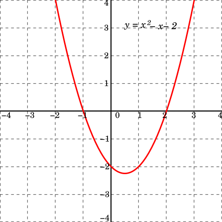

Descargar estos apunte en pdf o html
La expresión debe escribirse entre paréntesis y debería ser una expresión que se evalúe a un valor booleano, esto es true o false.
No se permitirá un cast implícito de una expresión que se evalúa como entero a bool como sucede en otros lenguajes como C.
Estructura if
if (expresión)
sentencia;
if (expresión)
{
bloque;
}
Estructura if - else
if (expresión)
sentencia_1;
else
sentencia_2;
if (expresión)
{
bloque_1;
}
else
{
bloque_2;
}
Estructura if - else if - else (Condicional múltiple)
if (expresión_1)
{
bloque_1;
}
else if (expresión_2)
{
bloque_2;
}
else
{
bloque_3;
}
// continua el programa;
La instrucción if es una instrucción que se usa para controlar el flujo de ejecución del programa. En cambio, la expresión if es una expresión que se evalúa a un valor y puede ser usada en otros contextos, como asignaciones o expresiones más complejas.
Ejemplo:
Supongamos un programa que me pide la hora del día y me dice buenos días, tardes o noches dependiendo de si son después de las 6:00, 12:00 o 20:00 horas respectivamente.
Con una instrucción if quedaría como en el ejemplo de la derecha...
Fijémonos que en todas las partes de la lógica de la instrucción if, se asigna un valor a la variable saludo. Por lo que podremos transformarlo en una expresión.
public static void Main()
{
Console.Write("¿Qué hora es?: ");
int hora = int.Parse(Console.ReadLine()!);
string saludo;
if (hora < 6)
saludo = "Buenas noches";
else if (hora < 12)
saludo = "Buenos días";
else if (hora < 20)
saludo = "Buenas tardes";
else
saludo = "Buenas noches";
Console.WriteLine(saludo);
}
Con una expresión if a través de una ternaria quedaría de la siguiente forma:
public static void Main()
{
Console.Write("¿Qué hora es?: ");
int hora = int.Parse(Console.ReadLine()!);
// La hemos indentado para que queda más legible.
string saludo = hora < 6
? "Buenas noches"
: hora < 12
? "Buenos días"
: hora < 20
? "Buenas tardes"
: "Buenas noches";
Console.WriteLine(saludo);
}
🚀 Ampliación opcional:
Podemos comentar que en otros lenguajes como Java, C, C++, JavaScript, Swift o Dart sería muy similar a C#. Pero en otros lenguajes como Kotlin, Python o Rust tenemos una versión del if que funciona como expresión.
Kotlin:
fun main() {
print("¿Qué hora es?: ")
val hora = readln().toInt()
val saludo = if (hora < 6) "Buenas noches"
else if (hora < 12) "Buenos días"
else if (hora < 20) "Buenas tardes"
else "Buenas noches"
println(saludo)
}
Python:
hora = int(input("¿Qué hora es?: "))
saludo = "Buenas noches" if hora < 6 else \
"Buenos días" if hora < 12 else \
"Buenas tardes" if hora < 20 else \
"Buenas noches"
print(saludo)
Ejemplo 1:
Realiza un programa que calcule la o las soluciones, si las hay, para ecuaciones de 2º grado de la forma:
📌 Nota: Si el discriminante es mayor que 0 tiene 2 soluciones. Si es igual a 0 tiene 1 solución y si es menor que cero no tiene soluciones reales.
Console.WriteLine("Dame el valor a:");
int a = int.Parse(Console.ReadLine()!);
Console.WriteLine("Dame el valor b:");
int b = int.Parse(Console.ReadLine()!);
Console.WriteLine("Dame el valor c:");
int c = int.Parse(Console.ReadLine()!);
double discriminante = Math.Pow(b, 2) - 4 * a * c;
string salida = $"La ecuación {a}x² + {b}x + {c} = 0\n";
if (discriminante < 0)
{
salida = "No tiene solución";
}
else if (discriminante == 0)
{
double x = -b / (2 * a);
salida = $"Corta el eje X en un único punto: {x:F2}";
}
else
{
double x1 = (-b + Math.Sqrt(discriminante)) / (2 * a);
double x2 = (-b - Math.Sqrt(discriminante)) / (2 * a);
salida = $"Corta el eje X en dos puntos: {x1:F2} y {x2:F2}";
}
Console.WriteLine(salida);
Ejemplo de ejecución:
Dame el valor a: 1 Dame el valor b: -1 Dame el valor c: -2 La ecuación 1x² + -1x + -2 = 0 Corta el eje X en dos puntos: 2.00 y -1.00

Ejemplo 2:
Una empresa de mensajería nos ha pedido que hagamos un programa que calcule el precio del envío de un paquete. Para ello nos han dado las siguientes reglas:
Console.Write("Introduce el peso del paquete en kg: ");
double peso_kg = double.Parse(Console.ReadLine()!);
double precio_E;
if (peso_kg < 1)
precio_E = 5;
else if (peso_kg < 5)
precio_E = 10;
else if (peso_kg < 10)
precio_E = 15;
else
precio_E = 20;
Console.WriteLine($"El precio del envío es de {precio_E} euros.");
Ejemplo de ejecución:
Introduce el peso del paquete en kg: 3.5 El precio del envío es de 10 euros.
Ejemplo 3:
Se nos pide hacer un sencillo programa de terminal en CSharp que calcule el máximo recomendable de pulsaciones durante el ejercicio físico de una persona. Para ello se nos dan las siguientes reglas:
Si una persona hace ejercicio con regularidad y está en buen estado físico, para calcular sus pulsaciones restaremos a 200 puntos la edad del individuo. Además si tiene entre 30 y 39 deberemos descontar siempre 5 puntos, para los que tengan entre 40 y 49, 15 puntos, y los que se hallen por encima de los cincuenta años 20 puntos.
Si la persona no esta en buen estado físico o empieza a hacer ejercicios deberemos restar además de las cantidades anteriores 40 puntos a cualquier edad.
Console.Write("Introduzca su edad: ");
int edad = ushort.Parse(Console.ReadLine()!);
int pulso = 200u - edad;
if (edad >= 30 && edad < 40)
pulso -= 5;
else if (edad >= 40 && edad < 50)
pulso -= 15;
else if (edad >= 50)
pulso -= 20;
Console.Write("Hace ejercicio físico con frecuencia S/N: ");
bool haceEjercicio = char.ToLower(char.Parse(Console.ReadLine() ?? "n")) == 's';
if (!haceEjercicio)
pulso -= 40;
Console.WriteLine($"Su máximo recomendado para hacer ejercicio es de {pulso} ppm");
Ejemplo de ejecución:
Introduzca su edad: 45 Hace ejercicio físico con frecuencia S/N: s Su pulso máximo recomendado para hacer ejercicio es de 140 ppm
Ejemplo 4:
Realiza un programa que te ayude a tomar decisiones jugando a Piedra - Papel - Tijera
Para ello...
Random semilla = new Random();int jugadaOrdenador = semilla.Next(1, 4); // Devuelve un valor entero aleatorio entre 1 y 3const string PIEDRA = "PIEDRA";
const string PAPEL = "PAPEL";
const string TIJERA = "TIJERA";
Console.Write("Introduce tu jugada (Piedra, Papel, Tijera): ");
string jugadaUsuario = Console.ReadLine()?.ToUpper() ?? PIEDRA;
Random semilla = new Random();
int valorJugadaOrdenador = semilla.Next(1, 4);
string jugadaOrdenador;
if (valorJugadaOrdenador == 1)
jugadaOrdenador = PIEDRA;
else if (valorJugadaOrdenador == 2)
jugadaOrdenador = PAPEL;
else
jugadaOrdenador = TIJERA;
string mensaje;
if (jugadaUsuario == jugadaOrdenador)
mensaje = "Empate";
else if (jugadaUsuario == PIEDRA && jugadaOrdenador == TIJERA
|| jugadaUsuario == PAPEL && jugadaOrdenador == PIEDRA
|| jugadaUsuario == TIJERA && jugadaOrdenador == PAPEL)
mensaje = "Ganas";
else
mensaje = "Pierdes";
Console.WriteLine($"Tu jugada ha sido: {jugadaUsuario}");
Console.WriteLine($"La jugada del ordenador ha sido: {jugadaOrdenador}");
Console.WriteLine(mensaje.ToUpper() + " !!!");
Ejemplo de ejecución:
Introduce tu jugada (Piedra, Papel, Tijera): piedra Tu jugada ha sido: PIEDRA La jugada del ordenador ha sido: PAPEL PIERDES !!!
Es la más antigua y por tanto la podremos encontrar en casi todos los lenguajes de programación. Sin embargo, como sucede con los if, en ciertos casos hay formas menos "verbosas" de escribirlo a través de expresiones y por tanto muchos lenguajes modernos incluyendo C# han incluido esta opción.
La sintaxis básica de la instrucción o sentencia switch será la siguiente:
switch (expresión no booleana)
{
case patron1:
// No se permiten instrucciones ni bucles sin un break;
case patron2:
case patron3:
instrucción;
break;
case patron4: {
bloque
break;
}
...
default:
sentencia;
break;
}
Existe con sintaxis similar en casi todos los lenguajes y es la que deberíamos usar en la mayoría de los casos, pues es reconocida por todos los programadores.
Nota importante
En la última parte de este tema profundizaremos en alguno de los patrones que se pueden dar a la derecha del case.
De momento para introducir la sintaxis de la instrucción y su comportamiento, usaremos como patrón valores numéricos, de cadena, caracter, etc.
¿Cómo evalúa C# la siguiente sentencia?...
case cuyo patrón o literal se corresponda con el valor obtenido en el punto 1.default; y si no hay default, termina la ejecución de switch.break esta deberíamos ponerla para evitar caídas al 'vacío'. (💀 fall through 💀)Ejemplo 1:
Veamos un sencillo ejemplo en el que vamos a asignar a una variable presupuesto el presupuesto de un departamento para un año. Teniendo en cuenta que el departamento de matemáticas tiene asignados 200€, el de lengua francesa y castellano 500€ y el de informática 100€.
string departamento = "INFORMATICA";
int? presupuesto;
switch (departamento)
{
case "MATEMATICAS":
presupuesto = 200;
// Fall thought al no poner break.
// C# nos generará un error de compilación aunque otros lenguajes no.
case "CASTELLANO":
case "FRANCES":
// Agrupación de varios casos (Esto es válido).
presupuesto = 500;
break;
case "INFORMATICA":
presupuesto = 100;
break;
default:
presupuesto = null;
break;
}
string mensaje = $"El departamento de {departamento.ToLower()} " +
((presupuesto != null)
? $"tiene {presupuesto}€ de presupuesto"
: "no tiene presupuesto");
Console.WriteLine(mensaje);
Ejemplo de ejecución:
El departamento de informatica tiene 100€ de presupuesto
Ejemplo 2:
¿Cómo sería la selección de la jugada en el ordenador para nuestro juego de piedra – papel – tijera si usáramos un switch?
switch(valorJugadaOrdenador)
{
case 1: jugadaOrdenador = PIEDRA;
break;
case 2: jugadaOrdenador = PAPEL;
break;
case 3: jugadaOrdenador = TIJERA;
break;
default: jugadaOrdenador = "Jugada no válida";
break;
}
Ejemplo 3:
Realiza un programa de terminal en C# que dado un año y un mes de ese año, ambos en formato numérico. Me diga cuantos días tiene ese mes.
Utiliza una estructura switch para hacerlo.
int? dias;
Console.Write("Dime un año: ");
int año = int.Parse(Console.ReadLine() ?? "1900");
Console.Write("Dime un número de mes de ese año: ");
int mes = int.Parse(Console.ReadLine() ?? "1");
switch (mes)
{
case 1:
case 3:
case 5:
case 7:
case 8:
case 10:
case 12:
dias = 31;
break;
case 2:
dias = año % 4 == 0 && año % 100 != 0
|| año % 400 == 0 ? 29 : 28;
break;
case 4:
case 6:
case 9:
case 11:
dias = 30;
break;
default:
dias = null;
break;
}
string mensaje = dias != null ?
$"El mes {mes} de {año} tiene {dias} días." :
"Número de mes incorrecto.";
Ejemplo de ejecución:
Dime un año: 2024 Dime un número de mes de ese año: 2 El mes 2 de 2024 tiene 29 días.
El lenguaje también permite añadir condiciones a un mismo caso. A través de la evaluación de una expresión booleana. Para ello usaremos la palabra reservada del lenguaje when
Veamos un ejemplo básico de sintaxis, aunque su utilidad real la veremos más adelante al ver otros casos de uso de la instrucción switch dentro de la Programación Orientada a Objetos (POO).
switch (expresión no booleana)
{
case patron1 when <expresión booleana>:
case patron2:
instrucción;
break;
case patron3 when <expresión booleana>:
break;
case patron4 when <expresión booleana>: {
bloque
break;
}
...
default:
sentencia;
break;
}
Ejemplo:
¿Cómo sería la selección del resultado del juego de piedra – papel – tijera si usáramos un switch con un when?
string mensaje;
switch (jugadaUsuario)
{
case PIEDRA when jugadaOrdenador == TIJERA:
case PAPEL when jugadaOrdenador == PIEDRA:
case TIJERA when jugadaOrdenador == PAPEL:
mensaje = "Ganas";
break;
case PIEDRA when jugadaOrdenador == PAPEL:
case PAPEL when jugadaOrdenador == TIJERA:
case TIJERA when jugadaOrdenador == PIEDRA:
mensaje = "Pierdes";
break;
default:
mensaje = "Empate";
break;
}
Además, de como instrucción, a partir de CSharp8 podemos, usar la cláusula switch a modo expresión, evaluándose esta a un resultado.
Este esquema switch como expresión se ha incorporado de forma similar a otros lenguajes como Java14, Kotlin o Rust.
Las expresiones switch permiten usar una sintaxis de expresiones más concisa. Hay menos palabras clave case y break repetitivas.
La sintaxis básica podría ser:
TipoDato dato = <expresión> switch
{
<caso 1 patrón> => <expresión que se evalúe a TipoDato>,
<caso 2 patrón> when <expresión booleana> => <expresión que se evalúe a TipoDato>,
...
<caso n patrón> => <expresión que se evalúe a TipoDato>,
_ => <expresión que se evalúe a TipoDato o Error> // Caso por defecto
};
Fíjate que cada caso es un patrón que si se cumple entonces toda la expresión se evaluará a la parte derecha del =>. Además, cada patrón deberá de ir de casos más específicos (arriba) a más generales (abajo). En caso contrario obtendremos un aviso.
Ejemplo:
¿Cómo sería la selección de la jugada en el ordenador para nuestro juego de piedra – papel – tijera si usáramos una expresión switch?
Si lo comparamos con el que hicimos con la instrucción o sentencia switch, vemos que queda más claro y simplificado ahorrándonos clausulas case y break.
string jugadaOrdenador = valorJugadaOrdenador switch
{
1 => PIEDRA,
2 => PAPEL,
3 => TIJERA,
_ => "Jugada no válida"
};
📌 Nota: Puesto que aún estamos a principio de curso, no podemos ver todos los patrones que se pueden usar en los casos de una instrucción o expresión switch. Si embargo cuando veamos un concepto que nos permita incluir nuevos se explicarán. No obstante, puedes consultarlos todos en la documentación oficial del lenguaje.
Básicamente los patrones son 'sub-expresiones' que se evaluarán a bool (true o false) a partir del resultado de la evaluación de una expresión principal que no se evalúe a bool. Es por esa razón que se pueden aplicar en los casos de un switch. Pero además, podrán usarse en combinación con el operador is
Veamos un ejemplo, a través del operador is, de lo que acabamos de definir...
Supongamos un simple programa que pide dos números y me diga si el restar el primero menos el segundo está en el intervalo [-1, 1].
Console.Write("Introduce un número: ");
double n1 = double.Parse(Console.ReadLine()!);
Console.Write("Introduce un número: ");
double n2 = double.Parse(Console.ReadLine()!);
// Si lo hacemos a través de una expresión con los operadores tradicionales
// quedaría de la siguiente forma.
bool estaEnIntervalo1 = n1 - n2 >= -1 && n1 - n2 <= 1;
// Pero usando patrones sería ...
bool estaEnIntervalo2 = n1 - n2 is >= -1 and <= 1;
Console.WriteLine($"{n1} - {n2} = {n1 - n2}"
+ $"{(!estaEnIntervalo2?" no":"")}"
+ " está en el intervalo [-1, 1]");
Analicemos la expresión bool estaEnIntervalo = n1 - n2 is >= -1 and <= 1;
n1 - n2 que no se evalúa a bool.>= -1 and <= 1 que se evalúa a bool en función de la expresión principal.En otras palabras podemos decir que, cada parte de esta expresión subordinada >= -1 and <= 1 se evalúa en función de la principal n1 - n2.
Lo mismo sucede con las instrucciones o también expresiones switch;
Vamos a reescribir el código de ejemplo de la instrucción switch donde calculábamos los días de un més. Para ello, vamos a utilizar una expresión switch con patrones.
public static void Main()
{
Console.Write("Dime un año: ");
int año = int.Parse(Console.ReadLine()!);
Console.Write("Dime un número de mes de ese año: ");
int mes = int.Parse(Console.ReadLine()!);
int? dias = mes switch
{
< 1 or > 12 => null, // Si no es un valor válido dias es null.
2 => año % 4 == 0 && año % 100 != 0 // Si es febrero calculo los días
|| // viendo si el año es bisiesto.
año % 400 == 0 ? 29 : 28,
4 or 6 or 9 or 11 => 30, // Si es uno de los meses que tiene 30
// evalúo el switch a 30.
_ => 31 // EN cualquier otro caso tendrá 31.
};
string mensaje = dias != null ?
$"El mes {mes} de {año} tiene {dias} días." :
"Número de mes incorrecto.";
Console.WriteLine(mensaje);
}
Si nos fijamos ...
mes es la expresión principal que no se evalúa a bool.mes con el operador is en cada caso...
mes is < 1 or > 12mes is 2mes is 4 or 6 or 9 or 11mes is _De momento solo vamos usar ..
Patrones relaciones >, >=, < y <=
Patrones lógicos not, and, or con la misma prioridad que sus equivalentes en expresiones, por lo que deberemos usar paréntesis si deseamos modificarla.
Un caso de patrón algo más elaborado será el patrón posicional.
En este caso tendremos varias expresiones principales (e1, e2,..., en) y en cada caso del switch tendremos una tupla de patrones (p1, p2,..., pn) que se deberán evaluar todos a true respecto a la expresión principal que le corresponde en el mismo orden de la tupla.
TipoDato dato = (e1, e2,..., en) switch
{
(c1p1, c1p2,..., c1pn) => <expresión que se evalúe a TipoDato>,
(c2p1, c2p2,..., c2pn) => <expresión que se evalúe a TipoDato>,
...
(c3p1, c3p2,..., cnpn) => <expresión que se evalúe a TipoDato>,
(_, _, ..., _) => <expresión que se evalúe a TipoDato o Error> // Caso por defecto
};
Veamos un ejemplo de su uso más simple.
Ejemplo:
Así podría ser la selección del resultado del juego de piedra – papel – tijera si usáramos:
una expresión switch con un patrón tupla dentro, a su vez, de una expresión más compleja.
En el ejemplo las tuplas serán de 2 valores solo.
📌 Nota: Este ejemplo es algo enrevesado pero nos ayuda a entender una expresión puede formar parte de otra aún más compleja. Obviamente no sería la forma más recomendable pues al usarse con una ternaria y un ??, la expresión resultante es algo ofuscada.
string mensaje = jugadaUsuario == jugadaOrdenador
? "Empate"
: (jugadaUsuario, jugadaOrdenador) switch
{
(PIEDRA, TIJERA) => "Ganas",
(PAPEL, PIEDRA) => "Ganas",
(TIJERA, PAPEL) => "Ganas",
(_, _) => "Pierdes"
};
Asviso
El orden de los patrones es importante. En el caso de que se repitan, el primero que se encuentre será el que se ejecute. Por lo que deberemos colocar los casos más específicos primero y los más generales al final. En caso contrario obtendremos un aviso.
Ejemplo 1:
Recordemos el primer ejemplo donde asignábamos a una variable presupuesto el presupuesto de un departamento para un año. Teniendo en cuenta que el departamento de matemáticas tiene asignados 200€, el de lengua francesa y castellano 500€ y el de informática 100€.
string departamento = "INFORMATICA";
int? presupuesto = departamento switch
{
"MATEMATICAS" => 200,
"CASTELLANO" or "FRANCES" => 500,
"INFORMATICA" => 100,
_ => null,
};
string mensaje = $"El departamento de {departamento.ToLower()} " +
((presupuesto != null)
? $"tiene {presupuesto}€ de presupuesto"
: "no tiene presupuesto");
Console.WriteLine(mensaje);
Ejemplo 2:
Escribe un programa que pida la cantidad de unidades y el precio por unidad, y muestre el precio total con un descuento aplicado según estos tramos:
Console.Write("Introduce el precio por unidad: ");
double precio = double.Parse(Console.ReadLine()!);
Console.Write("Introduce la cantidad de unidades: ");
int cantidad = int.Parse(Console.ReadLine()!);
double descuento = cantidad switch
{
<= 10 => 0,
<= 30 => 0.05,
< 50 => 0.1,
_ => 0.15
};
double total = precio * cantidad * (1 - descuento);
Console.WriteLine($"El precio total es: {total:F2}€");
Ejemplo de ejecución:
Introduce el precio por unidad: 10 Introduce la cantidad de unidades: 25 El precio total es: 237.50€
Ejemplo 3:
Gestión de un hotel...
'I') o habitación doble ('D').Console.Write("Introducir el número de noches:");
int numeroNoches = int.Parse(Console.ReadLine()!);
Console.Write("Introducir tipo de habitación individual o doble [I|D]:");
char tipoHabitacion = char.ToUpper(char.Parse(Console.ReadLine()!));
int? precioNoche_Eur = tipoHabitacion switch // Opción 1: Usando un patrón con ternaria
{
'I' => numeroNoches > 2 ? 25 : 27,
'D' => numeroNoches > 2 ? 40 : 44,
_ => null,
};
int? precioNoche_Eur = tipoHabitacion switch // Opción 2: Usando un patrón con when
{
'I' when numeroNoches > 2 => 25, // Caso más concreto primero
'I' => 27,
'D' when numeroNoches > 2 => 40, // Caso más concreto primero
'D' => 44,
_ => null,
};
int? precioNoche_Eur = (numeroNoches, tipoHabitacion) switch // Opción 3: Usando un patrón tupla
{
(> 2, 'I') => 25,
(> 2, 'D') => 40,
(<= 2, 'I') => 27,
(<= 2, 'D') => 44,
_ => null
};
string salida = precioNoche_Eur != null
? $"El precio de su estancia en el hotel es: {precioNoche_Eur * numeroNoches}"
: "Opción incorrecta"
Console.WriteLine(salida);
Ejemplo de ejecución:
Introducir el número de noches: 3 Introducir tipo de habitación individual o doble [I|D]: I El precio de su estancia en el hotel es: 75
🚀 Ampliación opcional:
Podemos comentar que en otros lenguajes como Kotlin o Java tenemos versiones similares del switch de expresión. Si te finjas sabiendo C# puedes reconocer y entender someramente lo que hacen ambos programas.
Kotlin:
print("Introducir el número de noches:")
val numeroNoches = readln().toShort()
print("Introducir tipo de habitación individual o doble [I|D]:")
val tipoHabitacion = readln().uppercase().first()
val precioNocheEur: Int? = when (tipoHabitacion) {
'I' -> if (numeroNoches > 2) 25 else 27
'D' -> if (numeroNoches > 2) 40 else 44
else -> null
}
val salida = if (precioNocheEur != null) {
"El precio de su estancia en el hotel es: ${precioNocheEur * numeroNoches}"
} else {
"Opción incorrecta"
}
println(salida)
Java:
System.out.print("Introducir el número de noches:");
short numeroNoches = Short.parseShort(scanner.nextLine());
System.out.print("Introducir tipo de habitación individual o doble [I|D]:");
char tipoHabitacion = scanner.nextLine().toUpperCase().charAt(0);
Integer precioNocheEur = switch (tipoHabitacion) {
case 'I' -> (numeroNoches > 2) ? 25 : 27;
case 'D' -> (numeroNoches > 2) ? 40 : 44;
default -> null;
};
String salida = (precioNocheEur != null)
? "El precio de su estancia en el hotel es: " + (precioNocheEur * numeroNoches)
: "Opción incorrecta";
System.out.println(salida);
scanner.close();